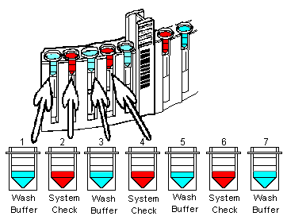

Tests: Pipettor Carryover
This procedure describes how to perform the pipettor carryover test.
The pipettor carryover test confirms that the sample pipettor is being washed correctly between samples. The carryover test verifies that sample carryover from one sample to the next is less than 10 ppm.
Perform this procedure to fulfill a laboratory request for carryover testing.
-
Load the carryover samples using 2 ml sample cups on a 1-99 series Sample Rack.
- Place sample cups in positions 2, 4, and 6 of the sample rack
- Add System Check to the sample cups in positions 2, 4, and 6 (cup 1/4 full).
- Place sample cups in positions 1, 3, 5, and 7 of the sample rack.
-
Pipette 500 µl of wash buffer into the sample cups in positions 1, 3, 5, and 7.

Note:- The system check sample cups are loaded and pipetted first to prevent splashing system check onto the carryover sample cups.
-
Request tests for the samples:
- 3 reps of AP25 (test 910) for buffer samples in positions 1, 3, 5, and 7.
- 1 rep of AP25INC (test 955) for system check samples in positions 2, 4, and 6.
Sample request details:- In the Sample Manager, enter the rack ID and press [Enter] to create an off-board rack.
- Select Test Request for the off-board rack.
- For position 1, select More Options > Request Service Assay.
- Enter a Sample ID.
- Select the desired test from the service assay test menu to add reps to the sample.
- Load the rack, and select Run.
-
Evaluate the results.
-
Calculate the pass/fail cutoff value from the baseline results. Verify that all carryover sample RLUs are less than 17,500 RLU + the median baseline RLU. (Example: Cutoff = 7500 baseline + 17,500 = 25000 RLU cutoff.)
Note:
- All three baseline replicates should be less than 9,000 RLU.
- The median (middle value) of the three baseline replicates should be used for the Wash buffer baseline value.
- System check samples run as AP25INC test 955 can be 10x brighter than the maximum RLU that the luminometer can report. These samples cause cross-talk or dark count errors when run. Ignore the errors.
- Evaluate the samples in the order that they were pipetted. Actual carryover will be high, not so high, and normal for the three reps (40000, 20000, and 10,000 RLU).
-
If results exceed the pass/fail cutoff, then interpret the failed results.
Area to check Possible causes for carryover Main Pipettor - Check the Y and Z alignment of the probe to the wash tower. Check at the probe tip and the probe base. Possible bent, worn, or damaged probe. Possible the transducer body is not perpendicular.
- Check for a clogged or dirty wash tower nozzle.
- Check that the wash pump is providing buffer to the wash tower nozzle. Possible priming issue.
- Check the Wash Tower vacuum is not too low or too high. Possible issue with the vacuum pump, vacuum valve, or a blocked wash tower drain tube.
Substrate Probe - Check for a damaged or defective substrate probe. Substrate probe issues are not carryover issues, but the substrate probe may be splashed by the carryover samples. This could affect the carryover results. Normal RVs are empty, except for magnetic particles, when substrate is dispensed.
- Inspect the probe.
- Perform a substrate volume check and verify good volume and no bubbles.
Wash Arm - Aspirate probe / arm issues are not carryover issues, but a probe may drip into the carryover samples, or the arm position could be down too far causing the probes to touch the samples.
- Verify wash arm alignment.
- Verify that all three aspirate probes are aligned correctly to the aspirate holes in the module.
- Verify that the wash arm mounting screw is secure and that the wash arm and lead screw do not have excess play.
- Check the peri pump tubing for damage that can allow an aspirate probe to drip.
- To verify repairs, repeat the Carryover Test.
-
Calculate the pass/fail cutoff value from the baseline results. Verify that all carryover sample RLUs are less than 17,500 RLU + the median baseline RLU. (Example: Cutoff = 7500 baseline + 17,500 = 25000 RLU cutoff.)